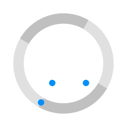

bit.ly/chat-lfnw
Demo Thunderdome
- Participate with Slack (web, app)
- Build your own bot in a VM
- Play the game with your bot
- Vanquish the others to be on the display
Chat Ops
LinuxFest Northwest 2019
Who?
Richard Clark
Crafty Penguins - richard@craftypenguins.net
We support companies, and their developers, that create web-based software that runs on Linux-based servers
Why ?
A few stories..
.. about a Pickaxe
.. and slow things
.. and a presentation
A Pickaxe..
In the early days of the great Dev and Ops wars when Docker was still in the shipyard and AWS had little competition.
There was a client..
- Bare Metal, Colo, Outgrowing capacity
- New QA stack at AWS
- $$$, Puppet, AWS API, Python
- Hipchat
- ..I don't want to wait
- ..I don't want to be involved
A Bot is Born...
..pickaxe?What is a bot...
- Just a program, that acts as a user
- ..typically in a Chat system
- ..that watches for things to be said
- ..and runs code based on what is said
- ..and/or tells you about stuff as it needs to
..typically in a Chat System?
For those who might have recently woke up from a long comaCommunication
With a Keyboard
.. at a distance
Chat
... is not new
First Multi-User Online Chat 1973
Internet Relay Chat (IRC) - 1988
Now - Chat is everywhere, multiple platforms
Some studies suggest the primary form of human communication?
A slow thing..
There once was a ticket system. It was as slow as a system could be. To "admin" a job would take 10 minutes, for an action that only took three..
..loading

- Not just the loading, lots of steps
- I am already in the chat, interacting with the client
- Switch to browser, click, click, click down
- New ticket, fill out details, the same I do 80% of the time
A Bot is Born...
- Ticket system has API
- Slack has API
- I can haz code
!ticket flarnscorp "Widget 5421 has busted grommet" Slack message, grommet has ripped at weld joint
!time 4311 @today 10am until 10:15 "Dab some snodder at the joint, all good"
!ticket status 4311 completed
A presentation..
- Open Source Summit 2018, Vancouver
- Surviving the Chaos, a Field Guide, Andrew Hobden, PingCap
- Pre-canned, ready to use environments to try stuff
- Chaos in the chaos talk
- Great thing to automate
DevOps
Software development to manage your Operations
Two great things merged together
Chat Ops
New Buzzword for something we have been doing for ages.
A Chat Bot..
..provides an alternative User Interface for DevOps automation
Buzz Word
- They want it
- They think it is cutting edge
- They have $
- It is easy and free to get started making a bot
- and having it perform devops tasks, or really any handy tasks.
- It's a great way to provide a UI
GO !
- Wrap up the stories...
- Bots have removed repetition
- Bots have saved me lots of time
- I made a bot to managed the demo
- Bots are easy, I'll show you..